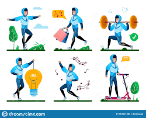

el estilo de vida activa
significa tomar la decisión de moverse en lugar de sentarse. Por ejemplo, una opción activa es usar las escaleras en lugar del elevador. Un ejemplo de una opción menos activa es estacionar el automóvil tan cerca de la entrada del edificio como sea posible.
historia y origen
Aunque sus orígenes se remontan hasta la época de Aristóteles, se considera que la expresión fue introducida por el psicólogo austrohúngaro Alfred Adler en la década de 1910, quien lo definió como el sistema de reglas de conducta desarrollado por los individuos para lograr sus metas en la vida.
El primer uso de la expresión "estilo de vida" apareció en el ensayo de Weber titulado Die Wirtschoftsethik der Weltreligionen, publicado en el volumen 41 del Archiv fuer Soziolforschun en 1915. Este ensayo fue reimpreso después en el Volumen 1 del Gesommelte Aufsaetze zur Religionssoziologíe en 1922-23.
Explore